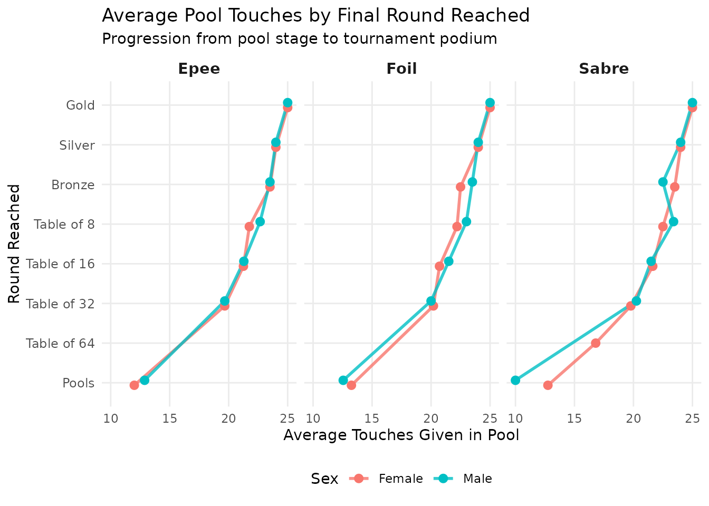
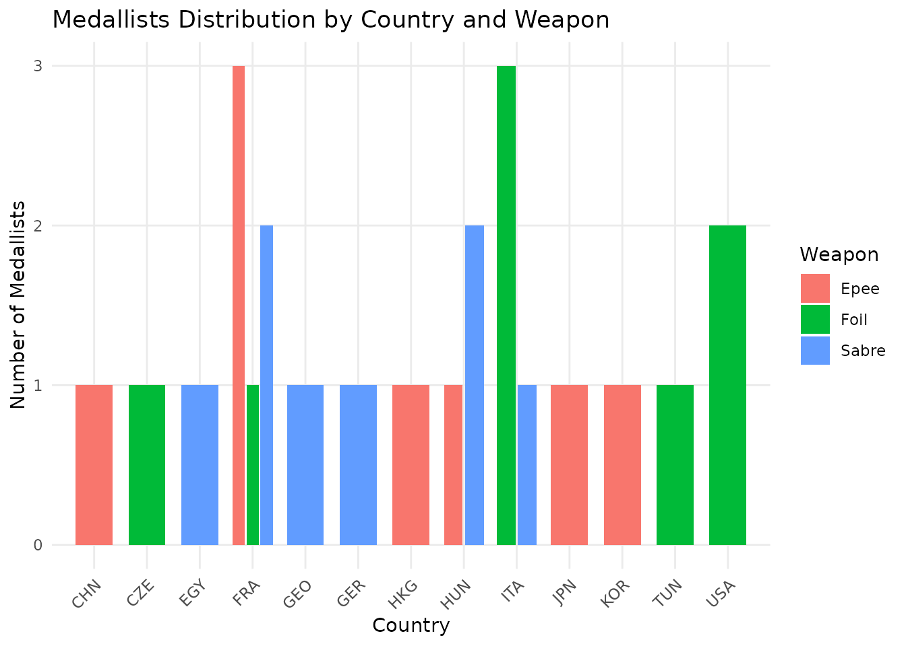

Introduction to fencingR
Paulina Guerscovich
vineta_fencingR.RmdExploring the Dataset
The package includes a built-in dataset, fencing_wc2026,
which contains pool phase performance metrics and tournament progression
records for a sample of athletes.
The package includes a built-in dataset, fencing_wc2026, which contains pool phase performance metrics and tournament progression records for a sample of athletes.
Let’s take a quick look at the structure of the dataset:
utils::head(fencing_wc2026, 5)
#> fencer country sex weapon passed_pool touches_given
#> 1 Larissa Eifler GER Female sabre yes 25
#> 2 Sara Balzer FRA Female sabre yes 24
#> 3 Toscane Tori FRA Female sabre yes 23
#> 4 Sugar Katinka Battai HUN Female sabre yes 24
#> 5 Sarah Noutcha FRA Female sabre yes 22
#> touches_received pool_index pool_win_rate round_reached
#> 1 12 13 0.83 Gold
#> 2 15 9 0.67 Silver
#> 3 16 7 0.67 Bronze
#> 4 14 10 0.83 Bronze
#> 5 17 5 0.67 Table of 8Each row represents an individual athlete and tracks critical performance indicators such as:
touches_given&touches_received: Raw offensive and defensive volumes during the pool stage.pool_index: The net touch indicator ().pool_win_rate: The victory ratio in pool bouts.round_reached: The highest tournament progression stage achieved.
1. Analyzing National Delegation Performance:
country_pool_index()
To evaluate structural dominance and talent depth across national
federations, we can calculate the average pool win rate per country. To
prevent statistical distortion from isolated individual entries, the
function incorporates a sample size threshold
(min_fencers = 12 by default, ensuring multi-entry
representation across sexes and weapon types).
# Calculate average pool win rates for delegations meeting the threshold
country_rankings <- country_pool_index(fencing_wc2026, min_fencers = 12)
country_rankings
#> # A tibble: 4 × 2
#> country average_pool_win_rate
#> <chr> <dbl>
#> 1 FRA 0.631
#> 2 ITA 0.599
#> 3 USA 0.591
#> 4 KOR 0.5792. Visualizing Pool Efficiency vs. Tournament Progression:
touchesgiven_effect()
In competitive fencing, pool stage performance directly dictates the initial seeding for direct elimination brackets. Fencers who dominate pools secure more favorable seeds, bypassing early encounters with top contenders.
The touchesgiven_effect() function investigates this
dynamic by plotting average pool touches against the final round
reached, faceted by weapon and stratified by sex:
touchesgiven_effect(fencing_wc2026)
3. Extracting and Visualizing Medallists
Understanding who reaches the podium is crucial for competitive benchmarking.
Filtering Podium Athletes: get_medallists()
We can use get_medallists() to isolate athletes who
reached the podium (Gold, Silver, and Bronze medals) and extract their
key identification attributes:
podium_athletes <- get_medallists(fencing_wc2026)
podium_athletes
#> # A tibble: 24 × 5
#> # Groups: weapon, sex [6]
#> fencer country sex weapon round_reached
#> <chr> <chr> <chr> <chr> <chr>
#> 1 Larissa Eifler GER Female sabre Gold
#> 2 Sara Balzer FRA Female sabre Silver
#> 3 Toscane Tori FRA Female sabre Bronze
#> 4 Sugar Katinka Battai HUN Female sabre Bronze
#> 5 Martina Favaretto ITA Female foil Gold
#> 6 Alice Volpi ITA Female foil Silver
#> 7 Lee Kiefer USA Female foil Bronze
#> 8 Ines Boubakri TUN Female foil Bronze
#> 9 Sera Song KOR Female epee Gold
#> 10 Marie-Florence Candassamy FRA Female epee Silver
#> # ℹ 14 more rowsPlotting Medallists Distribution:
plot_medallists_by_country()
With the extracted subset, we can visualize the distribution of medallists across countries, broken down by weapon discipline
plot_medallists_by_country(fencing_wc2026)